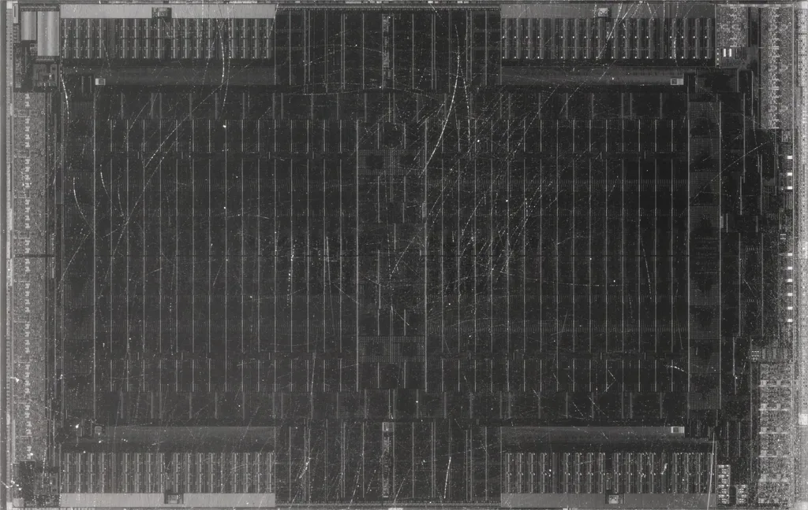

한미반도체, 인천에 '창사 최대' 8공장 검토…장비 쇼티지 선제 대응
반도체 후공정 장비 업체 한미반도체가 인천 서구 주안국가산업단지 내 부지에 신규 8공장 건설을 검토하고 있는 것으로 알려졌다. 예정 규모는 약 1만 6529㎡(5000평)로, 1980년 창사 이래 최대 규모의 단일 공장이 될 전망이다. 현재 인근에서는 7공장이 한창 건설 중인데, 이보다도 여섯 배 이상 큰 부지를 추가로 확보해 생산 능력을 대폭 늘리겠다는 구상이다. 회사 측은 내년부터 반도체 장비 공급이 수요를 따라가지 못하는 이른바 '쇼티지' 국면이 닥칠 수 있다고 보고, 이에 선제적으로 대응하기 위해 증설을 추진하는 것으로 전해졌다.
한미반도체의 핵심 제품은 고대역폭메모리(HBM) 생산에 필수적으로 쓰이는 TC 본더(열압착 본더)다. 회사는 지난해 글로벌 HBM용 TC 본더 시장에서 약 71.2%의 점유율을 기록하며 세계 1위 자리를 지켰다. 올해 들어 국내외 메모리 반도체 기업들이 차세대 규격인 HBM4 양산에 본격적으로 뛰어들면서 관련 장비 수요도 함께 늘고 있다는 것이 회사 측 설명이다. 곽동신 한미반도체 대표이사 회장은 최근 "올해 HBM4 양산이 본격화하면서 2분기 TC 본더 수주가 집중되고 있고, 이 흐름은 하반기에 더욱 가속화될 것"이라고 밝힌 바 있다.

회사는 TC 본더 외에도 차세대 본딩 기술인 '하이브리드 본더' 개발에도 속도를 내고 있다. 연말에는 2세대 하이브리드 본더 프로토타입을 공개할 예정이며, 내년 상반기에는 폭이 넓어진 신제품 '와이드 TC 본더' 출시도 계획하고 있는 것으로 전해졌다. 이와 별도로 회사는 인천 서구 주안산업단지에 총 1000억 원을 투자해 하이브리드 본더 전용 공장을 짓고 있는 중이며, 이번에 검토되는 8공장은 이런 기존 투자 계획에 더해 생산 능력을 한층 더 끌어올리려는 시도로 풀이된다.
지난해 한미반도체는 연결 기준 매출 5767억 원을 기록해 창사 이래 최대 실적을 달성한 바 있다. 다만 올해 들어서는 실적 변동성이 커졌다는 평가도 나온다. 일부 분기에는 수주 공백으로 실적이 시장 기대치를 밑돌기도 했지만, 2분기 들어 HBM용 TC 본더 수주가 재개되면서 반등의 신호가 감지되고 있다는 분석이 많다. 업계에서는 메모리 업체들의 HBM4 양산 확대가 본격화하는 하반기부터 한미반도체의 실적이 다시 뚜렷한 성장세를 나타낼 수 있다는 전망이 우세하다.

이번 증설 검토는 글로벌 반도체 업계 전반에 퍼진 장비 부족 우려와도 맞물려 있다. AI 서버 투자 확대로 메모리 반도체 수요가 급증하면서, 이를 생산하는 데 필요한 후공정 장비 자체가 부족해질 수 있다는 관측이 업계 안팎에서 꾸준히 제기돼 왔다. 실제로 삼성전자 등 주요 메모리 업체들이 메모리 공급 부족이 2028년까지 이어질 수 있다고 전망한 바 있는데, 이는 곧 관련 장비를 만드는 한미반도체와 같은 업체에도 장기적인 수주 기회로 이어질 수 있다는 해석이 나온다.
업계에서는 한미반도체의 이번 8공장 검토가 아직 확정 단계는 아니라는 점에 주목한다. 부지 확보와 투자 규모, 착공 시점 등 구체적인 사항은 이사회 의결 등 내부 절차를 거쳐야 확정될 것으로 보인다. 다만 7공장 건설이 진행 중인 상황에서 곧바로 그보다 훨씬 큰 규모의 신규 공장을 검토하고 나섰다는 사실 자체가, 회사가 내다보는 HBM 시장의 성장 속도를 가늠하게 하는 대목이라는 평가가 나온다. 향후 구체적인 투자 계획이 공식화되면 국내 반도체 장비 업계 전반에도 적지 않은 파급 효과가 예상된다.